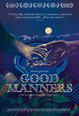
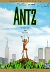
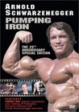
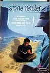
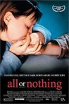
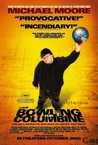
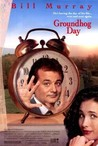

Movie Releases By Score

|
2601.
Millennium Mambo
Release Date:
December 31, 2003

Set in Taipei, this is the story of a young woman trapped in several bad relationships.
|

|
2602.
Shattered Glass
Release Date:
October 31, 2003
A study of a very talented - and at the same time very flawed - character. It is also a look inside our culture's noblest profession, one that protects our most precious freedoms by revealing the truth, and what happens when our trust in that profession is called into question. [Lions Gate Films]
|

|
2603.
Innocence
Release Date:
August 17, 2001
The story of the love triangle that is created when a widower seeks out the married woman he fell in love with forty years earlier.
|

|
2604.
The Matrix
Release Date:
March 31, 1999
A computer hacker (Reeves) learns that his entire life has been a virtual dream, orchestrated by a strange class of computer overlords in the far future. He joins a resistance movement (led by Fishburne) to free humanity from lives of computerized brainwashing.
|
2605.
Bull Durham
Release Date:
June 15, 1988
A romantic love story set in the dirt and grit of minor league baseball. Sarandan is a groupie for the Carolina Durham Bulls who chooses a protege each season to school in the art of love. This season she picks the team's untameable pitcher but eventually abides her true passion, the team's catcher, Costner. (MGM)
|
|

|
2606.
Riding Alone for Thousands of Miles
Release Date:
September 1, 2006

From three-time Academy Award nominated director Zhang Yimou comes a moving story of one man's journey across China's heartland. (Sony Pictures Classics)
|
2607.
ShowBusiness: The Road to Broadway
Release Date:
May 11, 2007
ShowBusiness: The Road to Broadway is a feature-length documentary that examines the annual influx of ambitious, star-crossed hopefuls, scrambling for the high-board to make their big leap into everlasting limelight. (Regent Releasing)
|
|
2608.
War of the Worlds
Release Date:
June 29, 2005

A contemporary retelling of H.G. Wells's seminal classic, the sci-fi adventure thriller reveals the extraordinary battle for the future of humankind through the eyes of one American family fighting to survive it. (Paramount Pictures)
|
|

|
2609.
Knuckleball!
Release Date:
September 21, 2012
The film follows the Major League’s only knuckleballers in 2011, Tim Wakefield and R.A. Dickey, as they pursue a mercurial art form in a world that values speed, accuracy, and numerical accountability. (FilmBuff)
|
2610.
Sky Ladder: The Art of Cai Guo-Qiang
Release Date:
October 14, 2016
Contemporary artist Cai Guo-Qiang's work spans East and West, human and cosmic, the playful and the profound. His signature gunpowder paintings pay homage to the Chinese roots of the explosive medium, while incorporating elements of chance and unpredictability. His massive explosion events actively engage audiences around the globe—from his seminal 1993 work that extended the Great Wall of China with six miles of gunpowder fuse; to the daytime colored fireworks that ripped through the deserts of Doha, to the astonishing opening and closing ceremonies of the 2008 Beijing Olympics. Told through the artist’s own words and those of family, friends, colleagues, and critics, Sky Ladder traces Cai’s meteoric rise from childhood in Mao’s China to pre-eminent global artist. We witness as Cai struggles with how to affect social change through art, and navigate the compromises and complexities that arise when you’ve made it to the top. When you’ve gone as far as he has, how do you challenge yourself? If you’re Cai Guo-Qiang, you continue to chase the ambitious dream that has eluded you for 20 years—Sky Ladder—a 1,650 foot ladder of fire climbing into the skies, connecting heaven and earth. [Netflix]
|
|
2611.
I Believe in Unicorns
Release Date:
May 29, 2015
Davina (Natalia Dyer) is an imaginative and strong-willed teenage girl who often escapes into a beautifully twisted fantasy life. Having grown up quickly as the sole caretaker of her disabled mother (Toni Meyerhoff), she looks for salvation in a new relationship with an older boy (Peter Vack). Davina is swept into a whirlwind of romance and adventure, but the enchantment of her new relationship quickly fades when Sterling's volatile side begins to emerge.
|
|

|
2612.
Thirst
Release Date:
July 31, 2009
Sang-hyun is a priest who cherishes life; so much so, that he selflessly volunteers for a secret vaccine development project meant to eradicate a deadly virus. But the virus takes the priest, and a blood transfusion is urgently ordered up for him. The blood he receives is infected, so Sang-hyun lives – but now exists as a vampire. Struggling with his newfound carnal desire for blood, Sang-hyun’s faith is further strained when a childhood friend’s wife, Tae-ju, comes to him asking for his help in escaping her life. Sang-hyun soon plunges into a world of sensual pleasures, finding himself on intimate terms with the Seven Deadly Sins. (Focus Features)
|
2613.
Notes on a Scandal
Release Date:
December 27, 2006
Based on the novel by Zoe Heller, this psychological thriller portrays two women caught up in a drama of need and betrayal. (Fox Searchlight Pictures)
|
|
|  |
2614.
Good Manners
Release Date:
July 27, 2018
Clara, a lonely nurse from the outskirts of São Paulo, is hired by mysterious and wealthy Ana to be the nanny of her soon to be born child. Against all odds, the two women develop a strong bond. But a fateful night marked by a full moon changes their plans. [Distrib Films]
|

|
2615.
The Fall of Fujimori
Release Date:
January 18, 2006
The Fall of Fujimori is a character-driven, political thriller exploring the volatile events that defined Alberto Fujimori's decade-long reign of Peru. (Stardust Pictures)
|

|
2616.
The City of Lost Children
Release Date:
December 15, 1995
One (Perlman) seeks for his twin brother, who was kidnapped by a scientist (Emilfork) who wants to steal children's dreams in an effort to stop aging.
|
2617.
Sing Your Song
Release Date:
January 13, 2012
Groundbreaking singer, actor and activist Harry Belafonte rose to fame in the U.S. in spite of segregation, and crossed over into mainstream America on his way to international stardom. His hit 1956 album "Calypso" made him the first artist in industry history to sell over a million LPs, and spawned the smash single "Banana Boat (Day-O)." Though recognized with Grammy, Tony and Emmy awards, Belafonte was blacklisted, harassed by the House Un-American Activities Committee (HUAC), spied on by the CIA and FBI, and threatened by the Klan, state troopers and Las Vegas mafia bosses.
Distilled from more than 700 hours of interviews, eyewitness accounts, movie clips, excerpts from FBI files, and news and rare archival film footage and stills, some of which has never been seen before, Sing Your Song reveals Belafonte as a tenacious hands-on activist who worked intimately with Dr. Martin Luther King, Jr., mobilized celebrities for social justice, participated in the struggle against apartheid in South Africa and took action to counter gang violence, prisons and the incarceration of youth. (HBO Films)
|
|

|
2618.
Uprising (2013)
Release Date:
January 11, 2013
Uprising recounts the story of the Egyptian revolution from the perspective of its leadership and key organizers, their struggle for freedom against major odds, their sacrifice, and the courage and ingenuity that allowed them to succeed. Featuring major figures including four Nobel Peace Prize nominees, several Egyptian presidential candidates, the former foreign ministers of Egypt and Jordan, and former US Ambassadors and White House officials, along with never before seen footage, UPRISING provides
Amir Waked the authoritative behind-the scenes view of one of the most dramatic events of our generation.
|
2619.
Shazam!
Release Date:
April 5, 2019
We all have a superhero inside us, it just takes a bit of magic to bring it out. In Billy Batson’s (Asher Angel) case, by shouting out one word—SHAZAM!—this streetwise 14-year-old foster kid can turn into the adult Super Hero Shazam (Zachary Levi), courtesy of an ancient wizard. Still a kid at heart—inside a ripped, godlike body—Shazam revels in this adult version of himself by doing what any teen would do with superpowers: have fun with them! Can he fly? Does he have X-ray vision? Can he shoot lightning out of his hands? Can he skip his social studies test? Shazam sets out to test the limits of his abilities with the joyful recklessness of a child. But he’ll need to master these powers quickly in order to fight the deadly forces of evil controlled by Dr. Thaddeus Sivana (Mark Strong).
|
|

|
2620.
The Black Power Mixtape 1967-1975
Release Date:
September 9, 2011
The Black Power Mixtape 1967-1975 mobilizes a treasure trove of 16mm material shot by Swedish journalists who came to the US drawn by stories of urban unrest and revolution. Gaining access to many of the leaders of the Black Power Movement—Stokely Carmichael, Bobby Seale, Angela Davis and Eldridge Cleaver among them—the filmmakers captured them in intimate moments and remarkably unguarded interviews. Thirty years later, this lush collection was found languishing in the basement of Swedish Television. Director Göran Olsson and co-producer Danny Glover bring this footage to light in a mosaic of images, music and narration chronicling the evolution one of our nation's most indelible turning points, the Black Power movement. Music by Questlove and Om'Mas Keith, and commentary from prominent African- American artists and activists who were influenced by the struggle -- including Erykah Badu, Harry Belafonte, Talib Kweli, and Melvin Van Peebles -- give the historical footage a fresh, contemporary resonance and makes the film an exhilarating, unprecedented account of an American revolution. [Sundance Selects]
|

|
2621.
Almost Holy
Release Date:
May 20, 2016
Gennadiy Mokhnenko has made a name for himself by forcibly abducting homeless drug-addicted kids from the streets of Mariupol, Ukraine. As his country leans towards a European Union inclusion, hopes of continued post-Soviet revitalization seem possible. In the meantime, Gennadiy's center has evolved into a more nebulous institution.
|

|
2622.
The Blue Room
Release Date:
October 3, 2014
A man and a woman, secretly in love, alone in a room. They desire each other, want each other, and even bite each other. In the afterglow, they share a few sweet nothings. At least the man seemed to believe they were nothing. Now under investigation by the police and the courts, Julien fails to find the words. “Life is different when one lives it and peels it off afterwards”. What happened? What is he accused of?
|
2623.
Amreeka
Release Date:
September 4, 2009
Amreeka chronicles the adventures of Muna, a single mother who leaves the West Bank with Fadi, her teenage son, with dreams of an exciting future in the promised land of small town Illinois. In America, as her son navigates high school hallways the way he used to move through military checkpoints, the indomitable Muna scrambles together a new life cooking up falafel burgers as well as hamburgers at the local White Castle. (National Geographic Cinema Ventures)
|
|
2624.
American Sniper
Release Date:
December 25, 2014
U.S. Navy SEAL Chris Kyle is sent to Iraq with only one mission: to protect his brothers-in-arms. His pinpoint accuracy saves countless lives on the battlefield and, as stories of his courageous exploits spread, he earns the nickname “Legend.” However, his reputation is also growing behind enemy lines, putting a price on his head and making him a prime target of insurgents. He is also facing a different kind of battle on the home front: striving to be a good husband and father from halfway around the world. Despite the danger, as well as the toll on his family at home, Chris serves through four harrowing tours of duty in Iraq, personifying the SEAL creed to “leave no man behind.” But upon returning to his wife, Taya Renae Kyle (Sienna Miller), and kids, Chris finds that it is the war he can't leave behind. [Warner Bros.]
|
|

|
2625.
Neither Heaven Nor Earth
Release Date:
August 5, 2016
French Army Captain Antares Bonassieu and his squad are assigned to monitor a remote valley of Wakhan, Afghanistan on the border of Pakistan. Negotiating control of the region between local shepherds and possible Taliban sympathizers grows more and more tenuous for them as men from all sides start mysteriously disappearing. Unable to explain this eerie phenomenon, the soldiers find themselves embroiled in an existential nightmare, desperate for their own safety. [Film Movement]
|

|
2626.
Broadway: The Golden Age, by the Legends Who Were There
Release Date:
June 11, 2004
The most important, ambitious and comprehensive film ever made about America's most celebrated indigenous art form, Broadway tells the stories of our theatrical legends, how they came to New York, and how they created this legendary century in American theatre. (Second Act Productions)
|

|
2627.
Stevie
Release Date:
March 28, 2003
This documentary speaks about the complex realities of growing up, family history, and how the system has - despite good intentions - failed to rescue certain kids. (Lions Gate Films)
|
2628.
Road to Perdition
Release Date:
July 12, 2002
A portrayal of two families whose fates are determined by the complex and often combative relationships between fathers and their sons. (DreamWorks Pictures)
|
|

|
2629.
The Lady and the Duke
Release Date:
May 10, 2002
The true story of an aristocratic young Scottish woman, Mrs. Grace Elliot (Russell), trapped in Paris during the French Revolution.
|

|
2630.
A Song for Martin
Release Date:
December 21, 2001
An intense account of the effect of Alzheimer's disease on a couple's love affair.
|

|
2631.
Go
Release Date:
April 9, 1999
Set over a 24-hour period in L.A. and Las Vegas, this unconventionally structured comedy is told from the decidedly off-center perspectives of three parties involved in the outrageous events that surround a botched drug deal. (Columbia TriStar)
|
|  |
2632.
Antz
Release Date:
October 2, 1998
When one ant becomes disenfranchised from the totalitarian work regime of his colony, he adventures off to lands unknown.
|

|
2633.
Climates
Release Date:
October 27, 2006
A gorgeous rumination on the fragility and complexity of human relationships. (Zeitgeist Films)
|

|
2634.
Skate Kitchen
Release Date:
August 10, 2018
Camille, an introverted teenage skateboarder (Rachelle Vinberg) from Long Island, meets and befriends an all-girl, New York City-based skateboarding crew called Skate Kitchen. She falls in with the in-crowd, has a falling-out with her mother, and falls for a mysterious skateboarder guy (Jaden Smith), but a relationship with him proves to be trickier to navigate than a kickflip.
|

|
2635.
The Devil's Candy
Release Date:
March 17, 2017
Diehard metalhead and struggling artist Jesse (Ethan Embry) moves with his wife (Shiri Appleby) and daughter (Kiara Glasco) to a middle-of-nowhere Texas town, unaware that the new house they got for an unbelievable deal comes with a grisly history. Disturbing demonic goings-on culminate with the appearance of Ray (Pruitt Taylor Vince). He’s the home’s former resident, and he’s here to do the Devil’s bidding. [IFC Midnight]
|

|
2636.
Iron Crows
Release Date:
August 26, 2011
The world center for ship-breaking is located in the port city of Chittagong in Bangladesh — perhaps the poorest nation on earth — is home to the ship-breaking industry. Here huge megaton behemoths that once sailed the seas are sent to be broken apart by men and boys (some as young as 12, often wearing flipflops) who earn $2 a day, from which they send money home to their families. They wrestle with thousands of tons of iron and asbestos, wielding blow-torches, hammers and crowbars. Here is where half of the world’s retired vessels are dismantled by 20,000 people who risk their lives to eke out the barest living. Iron Crows is a remarkably beautiful film, in this case, not just for its superb cinematography, but also for its indelible insight into how some of the most exploited people in the world retain their courage, decency and fortitude. (Film Forum)
|
2637.
Gone Baby Gone
Release Date:
October 19, 2007
Gone Baby Gone follows the explosive case of just one missing little girl. But inside this investigation lie secrets and a labyrinthine maze of class and corruption, evil and innocence...all leading up to one man's extraordinary choice in a world where right and wrong have become blurred. (Miramax)
|
|
2638.
The Insult
Release Date:
January 12, 2018
In today’s Beirut, a civilian dispute blown out of proportion finds Tony (Adel Karam), a Lebanese Christian, and Yasser (Kamel El Basha), a Palestinian refugee, facing off in court. As the media circus surrounding the case threatens a social explosion in divided Lebanon, Tony and Yasser reconsider their values and beliefs as revelations of trauma complicate their understanding of one another.
|
|
2639.
Where Is Kyra?
Release Date:
April 6, 2018
In Brooklyn, New York, Kyra (Michelle Pfeiffer) loses her job and struggles to survive on her ailing mother's income. As the weeks and months go on, her problems worsen. This leads her on a risky and enigmatic path that threatens her life.
|
|

|
2640.
Phil Ochs: There But for Fortune
Release Date:
January 5, 2011
As our country continues to embroil itself in foreign wars and pins its hopes on a new leader's promise for change, Phil Ochs: There But For Fortune is a timely and relevant tribute to an unlikely American hero. Over the course of a meteoric music career that spanned two turbulent decades, Phil Ochs sought the bright lights of fame and social justice in equal measure - a contradiction that eventually tore him apart. From youthful idealism to rage to pessimism, the arch of Ochs' life paralleled that of the times, and the anger, satire and righteous indignation that drove his music also drove him to dark despair. In this brilliantly constructed film, interview and performance footage of Ochs is illuminated by the ruminations of Joan Baez, Tom Hayden, Pete Seeger, Sean Penn, Peter Yarrow, Christopher Hitchens, Ed Sanders, and others. (First Run Features)
|

|
2641.
Magic Mike
Release Date:
June 29, 2012
Set in the world of male strippers, "Magic Mike" follows Mike as he takes a young dancer called The Kid under his wing and schools him in the fine arts of partying, picking up women, and making easy money. [Warner Bros. Pictures]
|
2642.
Straight Outta Compton
Release Date:
August 14, 2015
In the mid-1980s, the streets of Compton, California, were some of the most dangerous in the country. When five young men translated their experiences growing up into brutally honest music that rebelled against abusive authority, they gave an explosive voice to a silenced generation. Following the meteoric rise and fall of N.W.A., Straight Outta Compton tells the astonishing story of how these young men revolutionized music and pop culture forever the moment they told the world the truth about life in the hood and ignited a cultural war. [Universal Pictures]
|
|

|
2643.
Tale of Tales
Release Date:
April 22, 2016
Once upon a time there were three neighboring kingdoms each with a magnificent castle, from which ruled kings and queens, princes and princesses. One king was a fornicating libertine, another captivated by a strange animal, while one of the queens was obsessed by her wish for a child. Sorcerers and fairies, fearsome monsters, ogres and old washerwomen, acrobats and courtesans are the protagonists of this loose interpretation of the celebrated tales of Giambattista Basile.
|

|
2644.
Captain Fantastic
Release Date:
July 8, 2016
In the forests of the Pacific Northwest, a father (Viggo Mortensen) devoted to raising his six kids with a rigorous physical and intellectual education is forced to leave his paradise and enter the world, challenging his idea of what it means to be a parent.
|
|  |
2645.
Pumping Iron
Release Date:
January 18, 1977
Pumping Iron is a docudrama about the world of professional bodybuilding, with a focus on the 1975 IFBB Mr. Universe and 1975 Mr. Olympia competitions.
|

|
2646.
Cooley High
Release Date:
June 25, 1975
In 1964, a group of high school friends who live on the Near North Side of Chicago enjoy life to the fullest...parties, hanging out, meeting new friends. Then life changes for two of the guys when they meet a pair of career criminals and get falsely arrested in connection with stealing a Cadillac. We follow their lives through the end of high school and the dramatic end to their school year.
|

|
2647.
Scarecrow
Release Date:
April 11, 1973
Max, an ex-con drifter with a penchant for brawling and Lion, a homeless ex-sailor, partner up and head east together.
|
2648.
Matilda
Release Date:
August 2, 1996
Story of a wonderful little girl, who happens to be a genius, and her wonderful teacher vs. the worst parents ever and the worst school principal imaginable.
|
|

|
2649.
New York Doll
Release Date:
October 28, 2005
New York Doll is a film that captures one of those rare occasions where life is not only stranger, but better than fiction. This documentary chronicles the extraordinary journey of Arthur "Killer" Kane to reunite with his bandmates. (First Independent Pictures)
|

|
2650.
All the Money in the World
Release Date:
December 25, 2017
All the Money in the World follows the kidnapping of 16-year-old John Paul Getty III (Charlie Plummer) and the desperate attempt by his devoted mother Gail (Michelle Williams) to convince his billionaire grandfather (Christopher Plummer) to pay the ransom. When Getty Sr. refuses, Gail attempts to sway him as her son's captors become increasingly volatile and brutal. With her son's life in the balance, Gail and Getty's advisor (Mark Wahlberg) become unlikely allies in the race against time that ultimately reveals the true and lasting value of love over money.
|
2651.
One Week and a Day
Release Date:
April 28, 2017
As Eyal finishes the traditional Jewish week of mourning for his late son, his wife Vicky urges him to return to their routine -- but just because the shiva has ended doesn’t mean it’s life as usual. Each coping in their own way, Eyal and Vicky both attempt to regain a sense of control over their future, as they struggle to discover that there are still things in life worth living for.
|
|

|
2652.
Still Mine
Release Date:
July 12, 2013
Based on true events and laced with wry humor, Still Mine tells the heartfelt tale of Craig Morrison (James Cromwell), who comes up against the system when he sets out to build a more suitable house for his ailing wife Irene (Geneviève Bujold). Although Morrison uses the same methods his father, an accomplished shipbuilder, taught him, times have changed. He quickly gets blindsided by local building codes and bureaucratic officials. As Irene becomes increasingly ill - and amidst a series of stop-work orders - Craig races to finish the house. Hauled into court and facing jail, Craig takes a final stance against all odds in a truly inspirational story. [Samuel Goldwyn Films]
|

|
2653.
A Screaming Man
Release Date:
April 13, 2011
Adam, a former swimming champion in his sixties, is a pool attendant at a hotel in Chad. When the hotel gets taken over by new Chinese owners, he is forced to give up his job to his son, Abdel, leaving Adam humiliated and resentful. Meanwhile the country is in the throes of a civil war. Rebel forces are attacking the government and the authorities demand the people contribute to the "war effort" with money or volunteers old enough to fight. Adam is constantly harassed for his contribution, but he is penniless. In a moment of weakness, Adam makes a decision that he will forever regret. (Film Movement)
|
2654.
Our Nixon
Release Date:
August 30, 2013
Never before seen Super 8 home movies filmed by Richard Nixon's closest aides - and convicted Watergate conspirators - offer a surprising and intimate new look into his Presidency.
|
|
2655.
The Island President
Release Date:
March 28, 2012
Jon Shenk’s The Island President is the story of President Mohamed Nasheed of the Maldives, a man confronting a problem greater than any other world leader has ever faced—the literal survival of his country and everyone in it. After bringing democracy to the Maldives after thirty years of despotic rule, Nasheed is now faced with an even greater challenge: as one of the most low-lying countries in the world, a rise of three feet in sea level would submerge the 1200 islands of the Maldives enough to make them uninhabitable. (Samuel Goldwyn Films)
|
|

|
2656.
The Cabin in the Woods
Release Date:
April 13, 2012
Five friends go to a remote cabin in the woods. Bad things happen. If you think you know this story, think again. The Cabin in the Woods is a horror film that turns the genre inside out. (Lionsgate)
|
2657.
Mesrine: Public Enemy No. 1
Release Date:
September 3, 2010
Now back in France, Mesrine is finally in police custody and facing justice for his crimes. After escaping a courtroom and kidnapping the judge at gunpoint, Mesrine is declared Public Enemy Number 1 and is eventually condemned to a maximum-security prison where he writes his memoirs, establishing himself as a household name and the anti-hero across France. Mesrine stages another daring escape and disappears into the lawless underworld, taunting the police and reinventing himself as a celebrity criminal through his savvy manipulation of the media. After such a monumental rise, comes the inevitable fall as the police close in, bringing the life of Jacques Mesrine to full bloody circle. (Music Box Films)
|
|

|
2658.
Miami Blues
Release Date:
April 20, 1990
An ex-con's first act of freedom is moving to Miami where he restarts his old criminal ways with even more potency.
|
2659.
Genius Within: The Inner Life of Glenn Gould
Release Date:
September 10, 2010
An enigmatic musical poet — and the most documented classical musician of the last century — world-renowned pianist Glenn Gould continues to captivate international audiences twenty-six years after his untimely death. Genius Within: The Inner Life of Glenn Gould humanizes the legend, weaving together an unprecedented array of unseen footage, private home recordings and diaries, as well as compelling interviews with Gould’s most intimate friends and lovers — all exploring the incongruities between Gould’s private reality and his wider image.(Lorber Films)
|
|

|
2660.
Charlie and the Chocolate Factory
Release Date:
July 15, 2005
Acclaimed director Tim Burton brings his vividly imaginative style to the beloved Roald Dahl classic Charlie and the Chocolate Factory, about eccentric chocolatier Willy Wonka (Depp) and Charlie Bucket (Highmore), a good-hearted boy from a poor family who lives in the shadow of Wonka's extraordinary factory. (Warner Bros.)
|

|
2661.
Headhunters
Release Date:
April 27, 2012
Headhunters stars the talented Aksel Hennie as Roger, a charming scoundrel and Norway's most accomplished headhunter. Roger is living a life of luxury well beyond his means, and stealing art to subsidize his expensive lifestyle. When his beautiful gallery owner wife introduces him to a former mercenary in the possession of an extremely valuable painting, he decides to risk it all to get his hands on it, and in doing so discovers something which makes him a hunted man. [Magnolia Pictures]
|

|
2662.
Quinceañera
Release Date:
August 4, 2006
Quinceañera is a look at what happens when teenage sexuality, age-old rituals and real estate prices collide. It is a story fueled by the racial, class and sexual tensions of Echo Park, a Latino neighborhood in transition. (Sony Pictures Classics)
|
|  |
2663.
Stone Reader
Release Date:
February 12, 2003
In this documentary, a filmmaker discovers a great unknown book and set out on a quest to learn why the book and writer vanished. (JETFilms)
|
|  |
2664.
All or Nothing
Release Date:
October 25, 2002
An unexpected tragedy brings two people together to rediscover their love.
|
|  |
2665.
Bowling for Columbine
Release Date:
October 11, 2002
Famed documentarian Michael Moore returns with his first feature film in five years, as he tackles the issue of America's unique obsession with firearms.
|

|
2666.
The Trials of Henry Kissinger
Release Date:
September 25, 2002
Is Henry Kissinger -- Nobel Laureate and the most famous diplomat of his generation -- also a war criminal? Provoked by the Christopher Hitchens's book, filmmakers Jarecki and Gibney have constructed a movie which is both brilliant legal brief and chilling psychodrama. (Film Forum)
|

|
2667.
Marcel Proust's Time Regained
Release Date:
June 16, 2000
Based on the last book of Proust's saga "a la recherche du temps perdu."
|
|  |
2668.
Groundhog Day
Release Date:
February 12, 1993
Teamed with a relentlessly cheerful producer (Andie MacDowell) and a smart-aleck cameraman (Chris Elliott), TV weatherman Phil Connors (Bill Murray) is sent to Punxsutawney, Pennsylvania, to cover the annual Groundhog Day festivities. But on his way out of town, Phil is caught in a giant blizzard, which he failed to predict, and finds himself stuck in small-town hell. Just when things couldn't get worse, they get worse; Phil wakes the next morning to find it's Groundhog Day all over again... and again... and again. [Sony]
|

|
2669.
Malcolm X
Release Date:
November 18, 1992
Spike Lee directs Denzel Washington in the role of African-American leader Malcolm X in this epic biographical drama.
|
2670.
Alléluia
Release Date:
July 17, 2015
Manipulated by a loving and jealous husband, Gloria has run away with her two children and started a new life far away from men and from the rest of the world. Impelled by her friend, Madeleine, she agrees to meet Michel through a dating site. The first time they see each other, there is a spark. Michel, a small-time crook (profession: gigolo), is thrilled, and Gloria falls deeply in love. Out of fear, Michel runs away, but Gloria comes to find him and makes him promise never to leave her again. She is ready to do anything to salvage this love. She abandons her children and pretends to be Michel's sister, so that he can continue his "widow" scams. But jealousy drives Gloria crazy, and she eventually kills Marguerite, one of the widows. Michel is in shock, but the two lovers remain tied to each other by some powerful link. They will keep going on their sordid path. Beyond the morbid pact that unites them, Michel finds in Gloria a sort of mother figure he has always been deprived of.
|
|
|
|
2671.
Half Moon
Release Date:
December 14, 2007
Mamo, the old renowned Kurdish musician, has begun a journey to Iraq to perform a music concert after the fall of Saddam Hussein. The Old of the village has predicted that Mamo should not go on the trip because as the full moon comes, something awful will happen to him. Mamo persists on continuing his journey because it's the first time he's been allowed to work in many years. (Miji Film)
|

|
2672.
Girl with a Pearl Earring
Release Date:
December 12, 2003
Set in 17th century Holland, this speculative account focuses on a 16-year-old housemaid who was the inspiration for one of Johannes Vermeer's most famous paintings.
|
2673.
JFK
Release Date:
December 20, 1991
Jim Garrison, a New Orleans district attorney, discovers there's more to the Kennedy assassination than the official story.
|
|
2674.
The Wedding Plan
Release Date:
May 12, 2017
At 32, Michal (Noa Kooler), an Orthodox Jewish woman, is finally looking forward to the comfort and security of marriage, when she is blindsided by her fiancé’s decision to call off the wedding with only a month’s notice. Unwilling to return to lonely single life, Michal decides to put her trust in fate and continue with her wedding plans, believing Mr. Right will appear by her chosen date. Confident she will find a match made in heaven, she books a venue, sends out invitations and buys a wedding dress, as her skeptical mother and sister look on with trepidation. During Michal’s month-long search for a spouse, she enlists the help of two different matchmakers, goes on a series of disastrous blind dates and finds an unexpected connection with a charming but utterly unsuitable pop star (Oz Zehavi) — all while dismissing pleas by concerned friends and family members that she reconsider her risky plan. As the day of the ceremony grows closer and no suitor appears, Michal puts everything on the line to find happiness.
|
|
2675.
Shut Up and Play the Hits
Release Date:
July 18, 2012
On April 2nd, 2011, LCD Soundsystem played its final show at Madison Square Garden. LCD frontman James Murphy had made the conscious decision to disband one of the most celebrated and influential bands of its generation at the peak of its popularity, ensuring that the band would go out on top with the biggest and most ambitious concert of its career. The instantly sold out, near four-hour extravaganza did just that, moving the thousands in attendance to tears of joy and grief, with New York Magazine calling the event “a marvel of pure craft” and Time magazine lamenting “we may never dance again.” Shut Up and Play the Hits is simultaneously a document of a once-in-a-lifetime performance and an intimate portrait of Murphy as he navigates both the personal and professional ramifications of his decision.(Oscilloscope Pictures)
|
|

|
2676.
Easier with Practice
Release Date:
February 26, 2010

In an effort to promote his unpublished novel, Davy Mitchell sets out on a road trip with his younger brother. However, the idealism of being on the road wears off and it quickly proves to be a lonely and unfulfilling experience for Davy. One night in a motel room he gets a random phone call from a mysterious woman named Nicole. They start a funny and intimate long distance relationship that leaves Davy happier than he has been in years. Hoping there is more to the relationship then a voice and a phone bill, Davy decides he wants to meet Nicole. Ultimately, he will have to face not only the truth about their relationship but also about himself. (Lantern Lane Entertainment)
|

|
2677.
Love, Simon
Release Date:
March 16, 2018
Everyone deserves a great love story. But for 17-year-old Simon Spier it's a little more complicated: he's yet to tell his family or friends he's gay and he doesn't know the identity of the anonymous classmate he's fallen for online.
|

|
2678.
Diplomacy
Release Date:
October 15, 2014
As the Allies march toward Paris in the summer of 1944, Hitler gives orders that the French capital should not fall into enemy hands, or if it does, then ‘only as a field of rubble’. The person assigned to carry out this barbaric act is Wehrmacht commander of Greater Paris, General Dietrich von Choltitz (Niels Arestrup), who already has mines planted on the Eiffel Tower, in the Louvre and Notre Dame and on the bridges over the Seine. Nothing should be left as a reminder of the city’s former glory. However, at dawn on 25 August, Swedish Consul General Raoul Nordling (André Dussollier) steals into German headquarters through a secret underground tunnel and there starts a tension-filled game of cat and mouse as Nordling tries to persuade Choltitz to abandon his plan .
|

|
2679.
Crime After Crime
Release Date:
July 1, 2011
Crime After Crime tells the dramatic story of the legal battle to free Debbie Peagler, an incarcerated survivor of domestic violence. Over 26 years in prison could not crush the spirit of this determined African-American woman, despite the wrongs she suffered, first at the hands of a duplicitous boyfriend who beat her and forced her into prostitution, and later by prosecutors who used the threat of the death penalty to corner her into a life behind bars for her connection to the murder of her abuser. Her story takes an unexpected turn two decades later when two rookie land-use attorneys step forward to take her case. Through their perseverance, they bring to light long-lost witnesses, new testimonies from the men who committed the murder, and proof of perjured evidence. Their investigation ultimately attracts global attention to victims of wrongful incarceration and abuse, and becomes a matter of life and death once more.
|

|
2680.
Prick Up Your Ears
Release Date:
May 8, 1987
This film is the story of the spectacular life and violent death of British playwright Joe Orton. In his teens, Orton is befriended by the older, more reserved Kenneth Halliwell, and while the two begin a relationship, it's fairly obvious that it's not all about sex. Orton loves the dangers of bath-houses and liaisons in public restrooms; Halliwell, not as charming or attractive as Orton, doesn't fare so well in those environs. While both long to become writers, it is Orton who achieves fame - his plays "Entertaining Mr. Sloane" and "Loot" become huge hits in London of the sixties, and he's even commissioned to write a screenplay for the Beatles. But Orton's success takes him farther from Halliwell, whose response ended both his life and the life of the up-and-coming playwright.
|
|
|
2681.
Journeyman
Release Date:
TBA
Boxer Matty Burton suffers a serious head injury during a fight. It is about the impact this has on his marriage, his life and and his family.
|
2682.
In the House
Release Date:
April 19, 2013
Sixteen-year-old Claude insinuates himself into the house of fellow high school student Rapha, writing about his family in essays that perversely blur the lines between reality and fiction for his jaded literature teacher Germain. Intrigued by this gifted and unusual student, Germain rediscovers his taste for teaching, but the boy’s intrusion sparks a series of uncontrollable events. [Cohen Media]
|
|

|
2683.
Hal
Release Date:
September 7, 2018
Although Hal Ashby directed a remarkable string of acclaimed, widely admired classics throughout the 1970s, he is often overlooked amid the crowd of luminaries from his generation. Amy Scott’s exuberant portrait explores that curious oversight, using rare archival materials, interviews, personal letters, and audio recordings to reveal a passionate, obsessive artist. Ashby was a Hollywood director who constantly clashed with Hollywood, but also a unique soul with an unprecedented insight into the human condition and an unmatched capacity for good. His films were an elusive blend of honesty, irreverence, humor, and humanity. Through the heartrending and inspiring Hal, you feel buoyed by Ashby’s love of people and of cinema, a little like walking on water.
|

|
2684.
City of Gold
Release Date:
March 11, 2016
Pulitzer Prize-winning food critic Jonathan Gold shows us a Los Angeles where ethnic cooking is a kaleidoscopic portal to the mysteries of an unwieldy city and the soul of America. [IFC Films]
|

|
2685.
Gran Torino
Release Date:
December 12, 2008
Retired auto worker Walt Kowalski fills his days with home repair, beer and monthly trips to the barber. The people he once called his neighbors have all moved or passed away, replaced by Hmong immigrants, from Southeast Asia, he despises. Resentful of virtually everything he sees--Walt is just waiting out the rest of his life. Until the night someone tries to steal his `72 Gran Torino. The Gran Torino brings his shy teenaged neighbor Thao into his life when Hmong gangbangers pressure the boy into trying to steal it. But Walt stands in the way of both the heist and the gang, making him the reluctant hero of the neighborhood--especially to Thao's mother and older sister, Sue, who insist that Thao work for Walt as a way to make amends. Though he initially wants nothing to do with these people, Walt eventually gives in and puts the boy to work fixing up the neighborhood, setting into motion an unlikely friendship that will change both their lives. (Warner Bros. Pictures)
|

|
2686.
Rejoice and Shout
Release Date:
June 3, 2011
Rejoice and Shout traces the evolution of Gospel through its many musical styles – the spirituals and early hymns, the four-part harmony-based quartets, the integration of blues and swing into Gospel, the emergence of Soul, and the blending of Rap and Hip Hop elements. Gospel music also walked in step with the story of African-American culture - slavery, hardscrabble rural existence and plantation work, the exodus to major cities, the Depression, World War II, civil rights and empowerment. Rejoice and Shout connects the history of African-American culture with Gospel as it first impacted popular culture at large. Years in the making, Rejoice and Shout captures so much of what is special about this music and African-American Christianity – the sermonizing, the heartfelt testimonials, getting slain in the spirit, the hard hollering, and of course the inspiring music. (Magnolia Pictures)
|

|
2687.
In Bloom
Release Date:
January 10, 2014
Set in the Georgian capital of Tblisi in 1992, friends Eka and Natia look to leave childhood behind as they ignore societal customs and work to escape their turbulent family lives.
|
2688.
Berlin
Release Date:
July 18, 2008
Staging Berlin has been discussed for over 30 years and in December of 2006 it became a reality. Berlin was said to be one of the most depressing albums ever made but as it was brought to life it was far from dismal. In 2006, Susan Feldman the artistic director of St. Anne’s Warehouse in Brooklyn approached Lou Reed about performing his album Berlin in its entirety. Reed accepted and invited acclaimed director and artist Julian Schnabel to design the sets for the performance. Having been an enormous admirer of the album since its release, Schnabel set about making a film that would reach beyond Brooklyn. Using the divided city of Berlin as its backdrop, the story of Caroline and her lovers is told through the emotive and provocative words of Lou Reed. With performers like Fernando Saunders, Antony, Steve Hunter, Rob Wassermann, Rupert Christie and Sharon Jones, a seven piece orchestra and the Brooklyn Youth Chorus all working to create a captivating and enveloping world, Lou Reed is able to take the audience with him as he bares witness to Caroline’s self-destruction. Julian’s set design create the backdrop of a hotel with greenish walls and with Lola Schnabel’s films displaying the beauty and tragedy of the narrator’s leading lady the experience is devastating and beautiful. (Third Rail Releasing/The Weinstein Company)
|
|
2689.
God Grew Tired of Us
Release Date:
January 12, 2007
This documentary explores the indomitable spirit of three "Lost Boys" from the Sudan who leave their homeland, triumph over seemingly insurmountable adversities and move to America, where they build active and fulfilling new lives but remain deeply committed to helping the friends and family they have left behind. (Newmarket Films)
|
|

|
2690.
Always Shine
Release Date:
November 25, 2016
Two friends, both actresses (Mackenzie Davis & Caitlin FitzGerald), leave Los Angeles for Big Sur embarking on a weekend getaway to reconnect. Once alone, however, the two women's suppressed jealousies and deep-seated resentments bubble to the surface, causing them to lose grasp not just of the true nature of their relationship, but also of their own identities.
|

|
2691.
Seabiscuit
Release Date:
July 25, 2003
The tale of a down-and-out racehorse that took the entire nation on the ride of a lifetime. (Universal Pictures)
|

|
2692.
Kissing Jessica Stein
Release Date:
March 13, 2001
A modern romantic comedy that breaks all the rules -- it blurs the lines between friendship and romantic love, and finds the funny, surprising and ultimately poignant overlap between the two. (Fox Searchlight Pictures)
|

|
2693.
Aimee & Jaguar
Release Date:
August 11, 2000
In 1943, while the Allies are bombing Berlin and the Gestapo is purging the capital of Jews, a dangerous love affair blossoms between two women. (Zeitgeist Films)
|
2694.
A Secret
Release Date:
September 5, 2008
A Secret follows the saga of a Jewish family in post-World War II Paris. François, a solitary, imaginative child, invents for himself a brother as well as the story of his parents` past. But on his fifteenth birthday, he discovers a dark family secret that ties his family`s history to the Holocaust and shatters his illusions forever. Adapted from Philippe Grimbert`s celebrated truth-inspired novel, Memory. (Strand Releasing)
|
|

|
2695.
King Jack
Release Date:
June 10, 2016
Jack (Charlie Plummer) is a 15-year-old kid stuck in a small, run-down town. He's got more problems than he can handle: an escalating feud with a violent older bully, a crush on a neighborhood girl, and having to go to summer school again. So when his runty younger cousin (Cory Nichols) comes to stay for the weekend, the last thing Jack wants to do is look after him - but no one really cares what Jack wants.
|

|
2696.
3-Iron
Release Date:
April 29, 2005
A battered woman finds an unlikely hero in a transient young man who breaks into empty homes while the residents are away.
|
2697.
Welcome to Sarajevo
Release Date:
November 26, 1997
Living on the edge amid the constant threat of attack, an offbeat band of TV journalists, lead by hotshot Jimmy Flynn (Harrelson), report from a devastated war-torn country. The action intensifies when one of the journalists crosses the line and risks his life in a bold attempt to smuggle an orphaned girl to safety. (BV Entertainment)
|
|
2698.
Happy End
Release Date:
December 22, 2017
A drama about a family set in Calais with the European refugee crisis as the backdrop.
|
|
2699.
Earth
Release Date:
April 22, 2009

The first film in the Disneynature series, Earth, narrated by James Earl Jones, tells the remarkable story of three animal families and their amazing journey across the planet we all call home. Earth combines rare action, unimaginable scale and impossible locations by capturing the most intimate moments of our planet's wildest and most elusive creatures. (Disneynature)
|
|

|
2700.
Burden
Release Date:
May 5, 2017
Chris Burdern guaranteed his place in art history in 1971 with a period of often dangerous and at times stomach-churning performances. After having himself shot, locked up in a locker for five days, electrocuted, and crucified on the back of a VW bug, Burden reinvented himself as the creator of truly mesmerizing installations and sculptures, from a suspended gigantic flywheel that seemingly spins on its own, to an assemblage of antique streetlights rewired for solar energy and illuminated outside the Los Angeles County Museum of Art. In BURDEN, Timothy Marrinan and Richard Dewey look at the artist’s works and private life with an innovative mix of still-potent videos of his 70s performances, personal videos and audio recordings, friends fellow students and colleagues, critics’ comments and latter day footage at his Topanga Canyon studio, all peppered with his thoughts and musings through the years. [Magnolia Pictures]
|